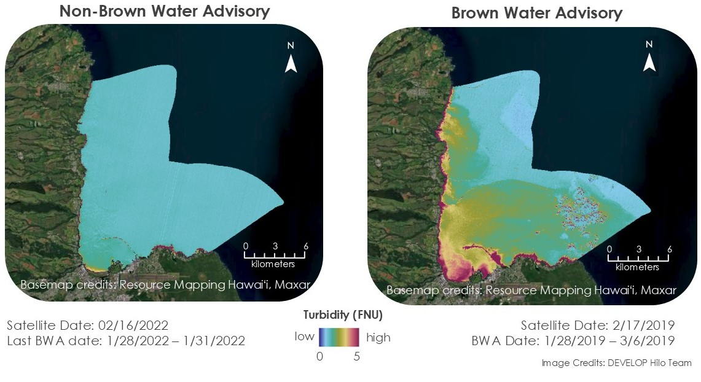
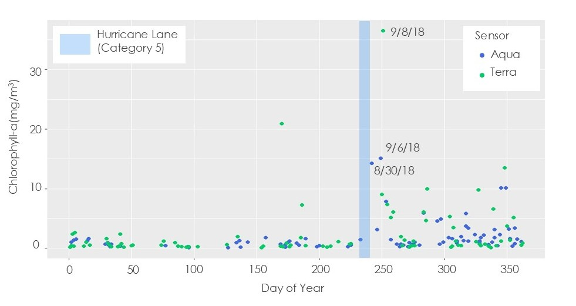

Hilo Bay Water Resources
Monitoring Water Quality in Hilo Bay, Hawaiʻi to Support Future Community Planning
Overview: I supervised and guided the Hilo Bay Water Resources team during the summer 2024 NASA DEVELOP term. This phenomenal team worked in-pereson in Hilo, Hawaiʻi to understand the feasibility of using satellite remote sensing to monitor water pollution. The team used Python, Google Earth Engine, R, and ArcGIS Pro to acquire water quality data between 2013 to 2024. The satellites and sensors that they used included: Landsat 8 OLI, Landsat 9 OLI-2, Aqua and Terra MODIS, and Sentinel-2 MSI. For parameters, I suggested that the team use measures of turbidity and chlorophyll-a, coupled with external data like weather events or sewage spills. At the end of their project, the team found that remote sensing of water quality parameters within Hilo Bay is feasible, and that, depending on data availability, there is good alignment between the occurrence of pollution events (brown water advisories) and turbidty and chlorophyll-a pixel presence.
Results: Here are some examples of the team's results. For the full methodology and end products, please download their project presentation and technical report (provided below).
In this first image, we see a comparison between dates without a brown water advisory and dates with the advisory. The satellite data show a corresponding turbidity response during dates with active brown water advisories. 
Additional analyses, revealed that certain water quality parameters, like chlorophyll-a, increase after significant weather events. The figure below shows chlorophyll-a values extracted from MODIS around the dates of Hurricane Lane, which affected Hawaiʻi during late August of 2018. We can see an increase, particularly in some points, in the weeks following the hurricane. 
Tools Used: Python, GEE, ArcGIS Pro, R
Keywords: Remote Sensing, Water Quality, Turbidity, Chlorophyll-a
Project Contributors: Dani Sonobe (project lead), Ashley Clark (team member), Kandi Shimabukuro (team member), Samantha White-Murillo (team member), Maya Hall (supervisor)
Check out some of their project deliverables: